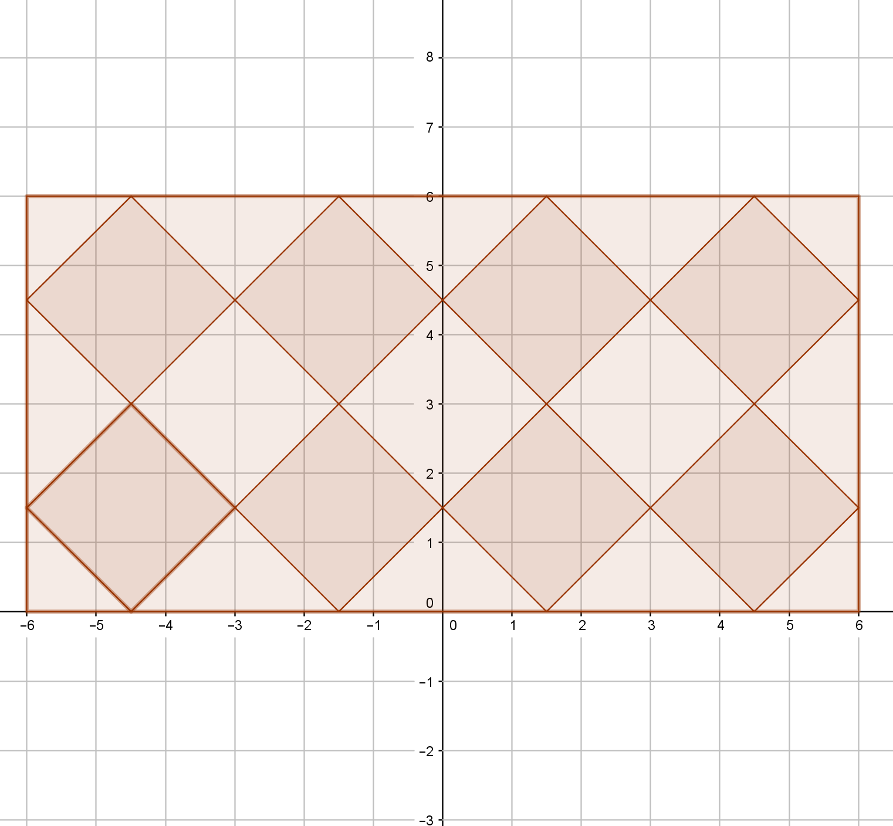
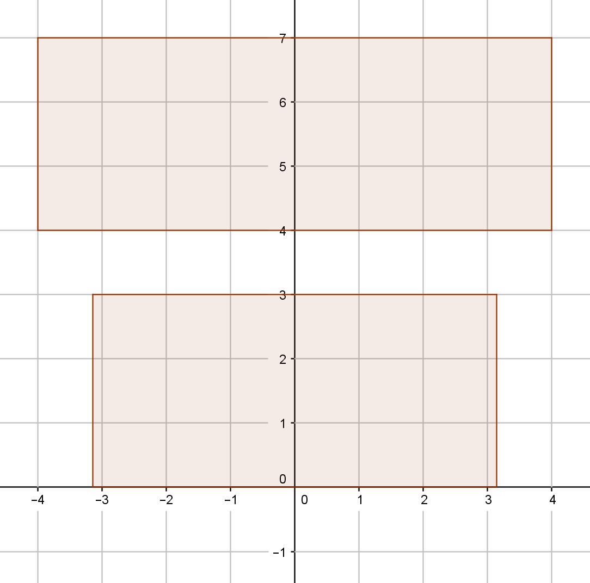
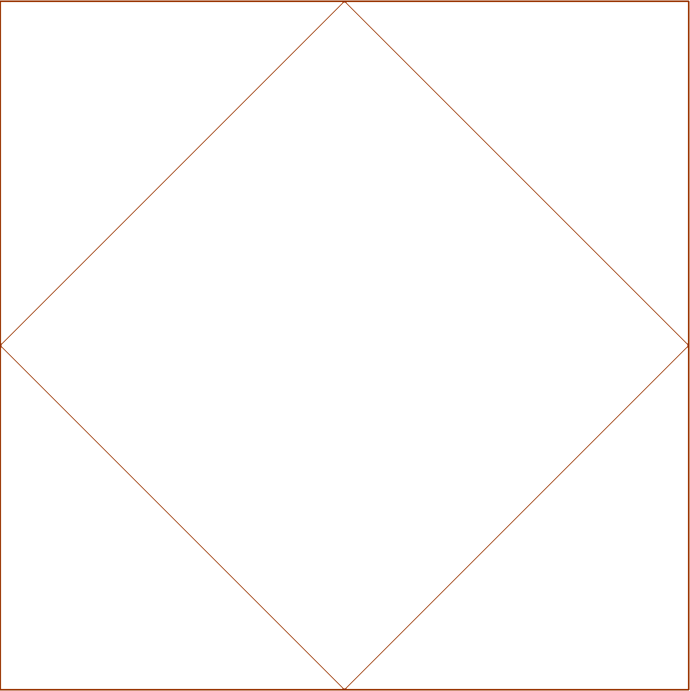

Can any rectangular region be perfectly square tiled?
The molecular square tile is developed from a square by packing a square with sides at 45° angles to the original square.

As a square tile can be developed from any square region, if a rectangle can be divided into a whole number of squares of equal size then it can be square tiled.

For a rectangle $R$ with length $l$ and width $w$ and a number $n \in \mathbb{R}$, if $n \cdot l \in \mathbb{N}$ and $n \cdot w \in \mathbb{N}$ then $R$ can be tiled.
By this process, $R$ is divided into $\frac{l \cdot w}{n^2}$ equal squares of sidelength $n$.
For example, the bottom rectangle to the left can not be tiled as it has sides of $2\pi$ and $3$ while the top rectangle has sides of $8$ and $3$ which is a whole number ratio.

Each of these square units can then be tiled to contain $1 + 2k(k-1)$ square tiles where $k \in \mathbb{Z^+}$ and represents the stage of tiling. Each tile will have a sidelength of $\frac{n}{k\sqrt{2}}$.